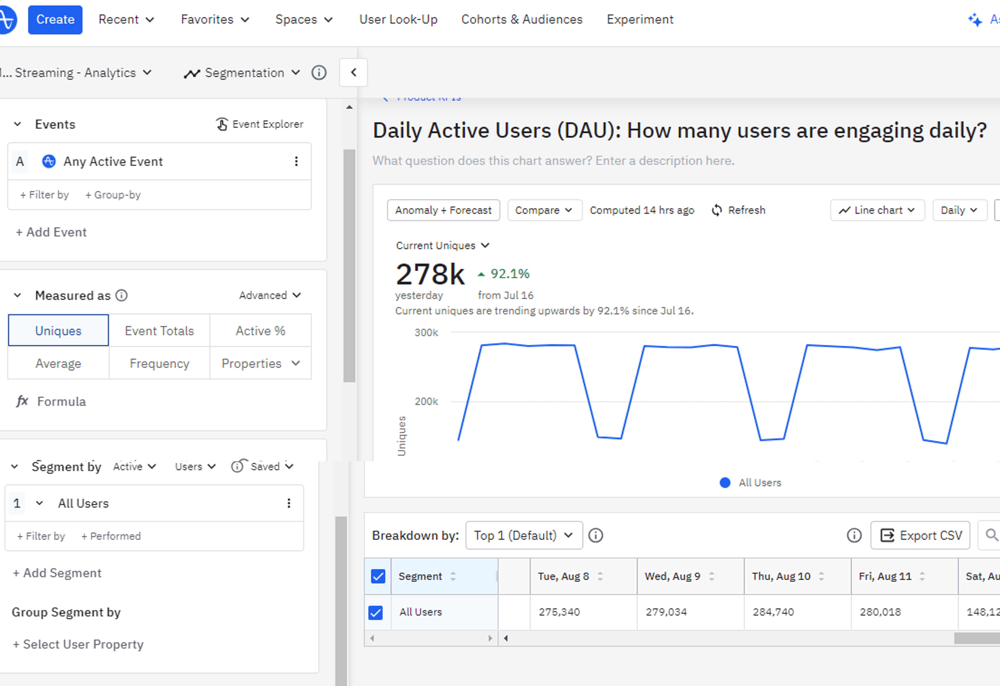
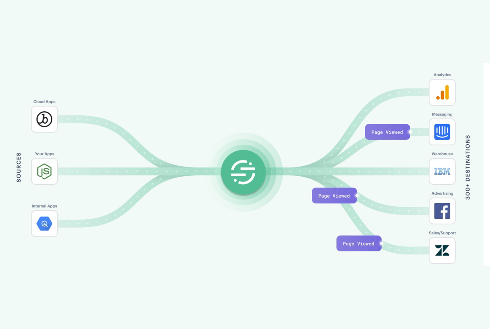

AB Inbev
Data & Reporting - Self Serve Business Intelligence Analyst - Global Remote
Period: from august/2022 to june/2023
 My challenge was to increase the self serve analytics mindset at AB Inbev users through Amplitude tool. The OKRs (Objectives and Key Resuts) were oriented in four pillars:
Analytics: Support users to identify opportunities in each segment data tables and development of Self Serve Analytics frameworks, dedicated to product, sales and Qas
; Connections: API keys enablement between sources and destinations
; Engagement: Tranning offers to new comers and specific data activation sessions (involves charts and dashboards creation)
; Government: Best in class of data tool management, such as data cleaning, users onboarding/offboarding.
Skills: Postman API · SQL · Confluence · Jira · Power BI Administrador · Data Tracking · Data Integration · Analytical Skills · Braze · Segment CDP · Amplitude Analytics · Microsoft Power BI · Business Intelligence (BI)
.
AB Inbev
Junior Analyst, Behaviour Data - Global Remote
Period: from may/2021 to august/2022
 In order to understand how users, interact with the ecommerce platform, my main objective in this work was to offer product teams support through the process that involves tracking user behavior on iOS, Android and Web. The main deliveries were:
Training sessions with product, engineering and QAs regarding the behaviour data driven culture and explanation of the use of data tools (Segment and Amplitude)
; Creation of the tagging plan by segment
; Customer data platform connection between sources and destinations
; Validation of the code implemented by engineering in order to approve the tagging between non-production and production phases
; Responsible to offer the tracking plan versioning by git and azure
; Support to product managers develop self serve analytics mindset and discover the best way
Skills: SQL · Confluence · Jira · Data Tracking · Data Integration · Analytical Skills · Braze · Segment CDP · Amplitude Analytics · Microsoft Power BI · Business Intelligence (BI)
Ernst & Young
Trainee, Digital Data Analytics - Campinas, Brazil
Period: from october/2020 to may/2021
 In the Digital Data Analytics division, I worked in the consultancy of an urban mobility project.
In the Digital Data Analytics division, I worked in the consultancy of an urban mobility project.
The goal was determine what would be the best security technology to implant in some buses with the most trafic.
My responsability was to validate the facial recognition viability, identify bugs and report the inisghts and learnings. Additionaly, I supported the technical analysis of products, impacts on society and supplier proposals..
Bosch Engineering GmbH
PreMaster, Cybersecurity - Abstatt, Germany
Period: from july/2019 to june/2020
The PreMaster position in Germany is offered to recent bachelor’s graduates on a temporary 1-year contract. With junior level responsibility, in the Cybersecurity sector, I performed support activities for security consulting experts in the automotive industry. Such as creating and reviewing manuals to maintain the "state of art" and engineering safety processes that a project must follow. In addition, it was possible to perform job rotation in the Marketing and Business Strategy sector. On this occasion, I had the responsibility of accompanying BEG's Digital Transformation project for 2 months to apply artificial intelligence in the corporate environment through meetings, creation of presentations for stakeholders and support in the preparation of the annual event.
Randstad
Assistant, Engineering Recruiter - Campinas, Brazil
Period: from november/2018 to may/2019
In the professional’s division, specialized recruitment was aimed at Engineering vacancies.
The main activities carried out were searches for candidates via internet, telephone interviews in Portuguese/English/Spanish and validate functions through technical questions in the area, organization of application materials (resumes, videos and scope of the vacancy) on the internal platform.
Bosch
Intern, Corporate Logistics - Stuttgart, Germany
Period: from february/2018 to july/2018
In Corporate Logistics, I provided support in Process Management that are directed to all Bosch units worldwide.
The activities involved were updating standard labels for OES category customers (automakers), creating and updating content for the internal communication platform which required handling in editing software for HTML-type formatting..
Bosch
Intern, Product Marketing - Campinas, Brazil
Period: from january/2016 to december/2017
In the departament of automotive aftermarket solutions, focused of equipments for workshop, the main activities involved were:
Support in market analysis and competitors, registration/prohibition of products in the SAP, issuance of technical-commercial documents such as manuals and leaflets, issuance of administrative documents (invoices, follow-up samples), control of fixed assets area, indirect purchasing and product launch support.
Toyota
Apprentice, Logistics - Indaiatuba, Brazil
Period: from june/2011 to june/2012
I was Apprentice Administrative Assistant when I was 16 years old, in the Logistic Planning Department (LPED).
As my first job, my main activities were administrative, resumed in the support of the department with the overtime forms fulfillment, sending/receiving of pouches and forms of medical examinations. This experience inspiered mt to make industrial engineering as bachelor degree.